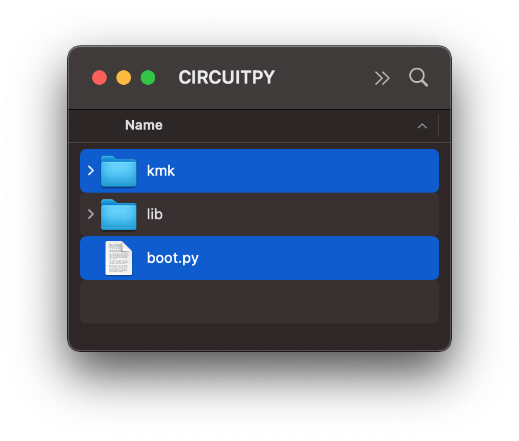
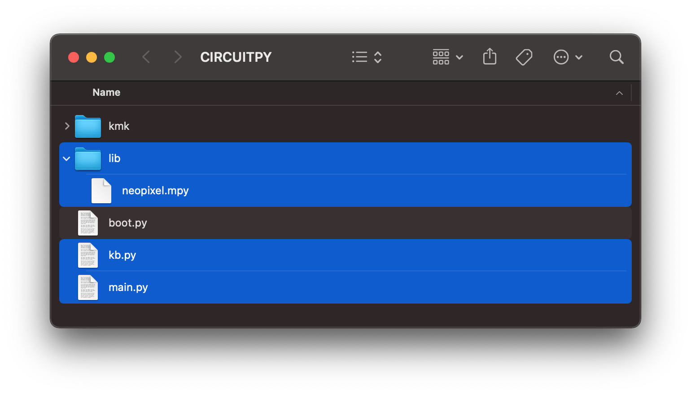
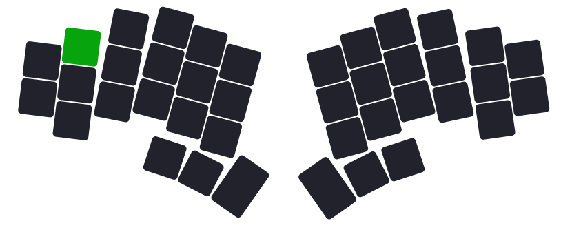

Documentation
A comprehensive guide of my KMK firmware1 for the splayortoraid keyboard (Messenger Edition)2.
Installation
Install CircuitPython
KMK is a keyboard focused layer that sits on top of CircuitPython.
Follow these steps and then come back here.
Install KMK
- Get a copy of KMK from the master branch
- Unzip and copy the
kmkfolder and theboot.pyfile to the root of the USB drive - Delete
code.pyfrom the USB drive

Install splaytoraid firmware
- Download the
kb.py,main.pyandlibfrom the GitHub repository and copy them onto your USB drive
You can find those files insplaytoraid_kmk_firmware.zipvia GitHub releases - Reboot the microcontroller

Microcontroller Support
kb.py is designed to work with the 0xCB Helios but you can update this line in kb.py to any supported microcontroller e.g.:
from kmk.quickpin.pro_micro.sparkfun_promicro_rp2040 import pinout as pins
...
RGB Setup
Add RGB library
In order to use RGB make sure you copied the 'lib' folder onto your splaytoraid in the installation step.
The 'lib' folder should contain the file neopixel.mpy.
Activate RGB
You have to change the variable splaytoraid_rgb from False to True in your main.py file and set splaytoraid_keys to the amount of keys you are using:
# ↓ EDIT CONFIG HERE ↓
splaytoraid_keys = 40 # Options: 36, 40
splaytoraid_rgb = False # Options: False, True
# ↑ EDIT CONFIG HERE ↑
Customize RGB
You can find this code in your kb.py file:
rgb = RGB(
pixel_pin=self.rgb_pixel_pin,
num_pixels=pixels,
rgb_order=(1, 0, 2),
val_limit=40, # Maximum brightness level. Only change if you know what you are doing!
hue_default=0,
sat_default=100,
val_default=20,
)
Consider changing hue_default, sat_default or val_default. Use values in the range of 0-255.
Read more about the possible configuration options HERE.
Control RGB via keycodes
You need to add some keycodes to your keymap in order to control your RGB lighting e.g.:
| Keycode | Description |
|---|---|
| KC.RGB_TOG | Toggles RGB on or off |
| KC.RGB_HUI | Increase Hue |
| KC.RGB_HUD | Decrease Hue |
| KC.RGB_SAI | Increase Saturation |
| KC.RGB_SAD | Decrease Saturation |
| KC.RGB_VAI | Increase Value |
| KC.RGB_VAD | Decrease Value |
Hide Device Storage (optional)
Here is how to hide your microcontroller from showing up as a USB storage by default.
I would recommend following these steps after you finished setting up your splaytoraid & keymap:
- Copy this specifig
boot.pyonto your'CIRCUITPY'USB storage and replace the existing file. - You can still access the device USB storage by holding a certain key on startup
Warning
After replacing boot.py you need to hold the green key when connecting the keyboard to your computer in order to access its USB storage.

Microcontroller support
boot.py is designed to work with the 0xCB Helios but you can update this line in boot.py to any supported microcontroller:
-
KMK is a feature-rich and beginner-friendly firmware for computer keyboards written and configured in CircuitPython ↩
-
A keyboard designed by freya and exclusively available through keeb.supply ↩